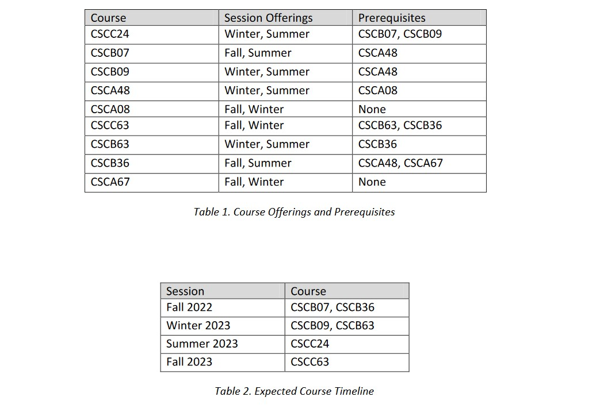

I need more time to work on this one.
UTSC course offering calendar
Java, Firebase, Git, Mockito, JUnit, Android SDK, Gradle, XML
UTSC course calendar enables students to efficiently plan their coursesby considering prerequisites and session offerings. The application generates a detailed timeline displaying each course in the earliest session possible, based on the user's input.
The program was designed to accommodate two different types of users: admin and student, with admins having the ability to specify course offerings and prerequisites, while students can easily generate timelines by providing their course preferences and previous coursework. The program takes into account 4-month session offerings, including Winter, Summer, and Fall, and is expected to help students plan their course schedules with ease.

Source code